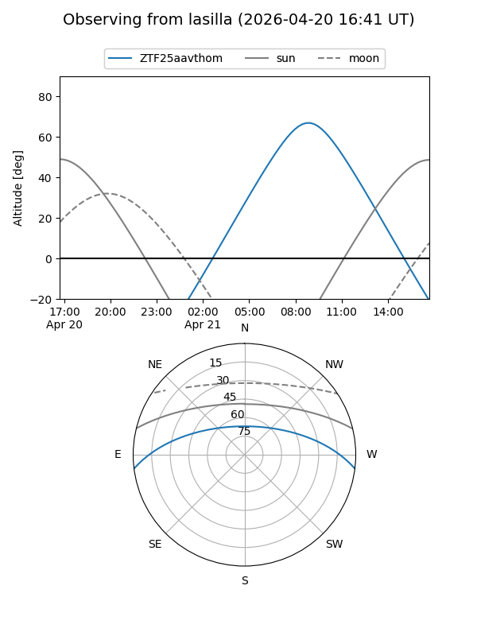
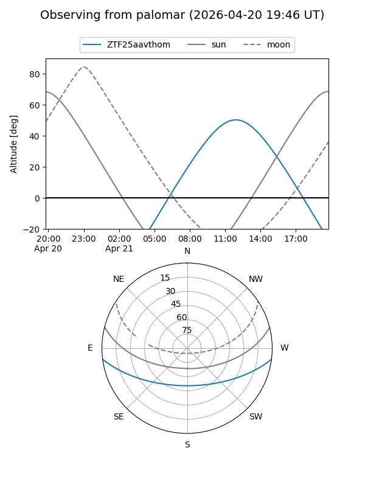

ZTF25aavthom
Target ZTF25aavthom at 2026-04-20 13:59
Aliases and brokers:
FINK: link
Lasair: link
ALeRCE: link
alt names
ZTF25aavthom (ztf,fink_ztf)
Coordinates:
equatorial (ra, dec) = 270.9989,-6.25818
equatorial (HMS+DMS) = 18:03:59.74,-06:15:29.46
galactic (l, b) = (21.8707,+7.59230)
Flags:
Photometry:
last ztfg=19.01
1 ztfg detections
Lightcurve
Visibility


Additional plots